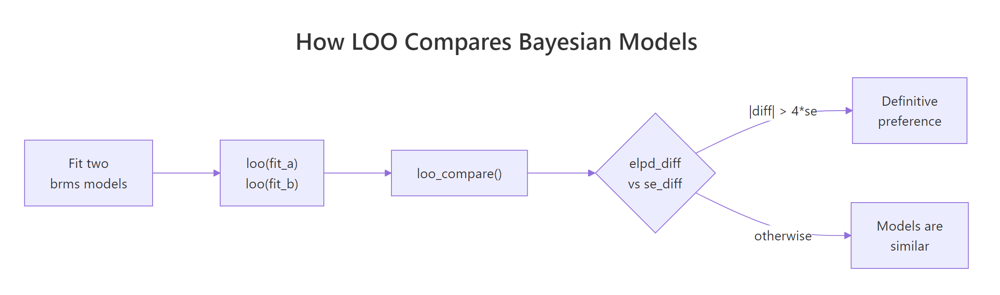
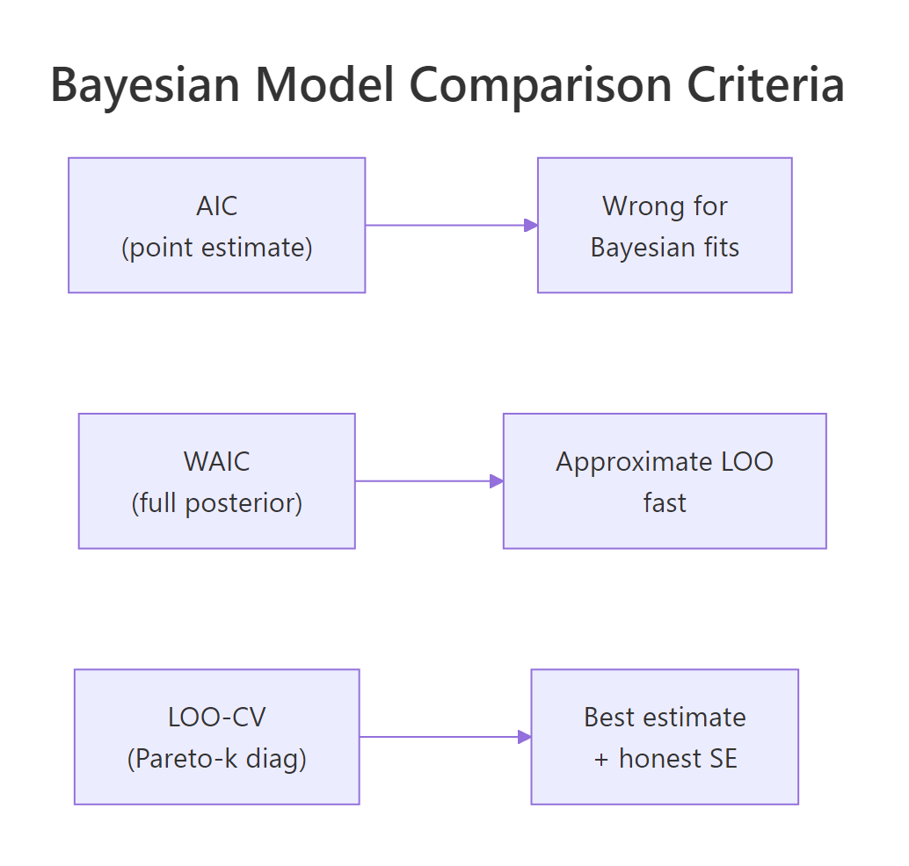

Compare Bayesian Models in R: Why LOO and WAIC Beat AIC for Bayesian Fits
You fit two or three Bayesian models on the same data. Which one do you report? For frequentist fits, the standard answer is AIC, but AIC uses a point estimate of the parameters and ignores the posterior. The Bayesian replacement is leave-one-out cross-validation (LOO-CV), implemented in R by the loo package. It estimates how well your model predicts new data without actually refitting, gives a proper standard error on the comparison, and warns you when its own approximation is unreliable. This post walks through computing LOO and WAIC for brms models, reading the comparison output, and recognising the failure modes.
Why does AIC fail for Bayesian models?
AIC (Akaike Information Criterion) is -2 * log-likelihood + 2 * k, where k is the number of parameters. The log-likelihood is computed at the maximum likelihood estimate (MLE), a single point in parameter space. AIC penalises adding parameters by 2 * k, which is correct under a specific asymptotic argument about the MLE-fit model on new data.
The trouble is that a Bayesian fit does not have an MLE. It has a posterior distribution over parameters. AIC has no clean way to use that posterior, so applied to a Bayesian fit, you would either reduce the posterior to a point (losing all uncertainty information) or use the posterior mean of the log-likelihood (which has no well-defined penalty).
The Bayesian replacement is to estimate the expected log predictive density (elpd) of the model on new data using the full posterior. There are two practical methods.
The first is WAIC (Widely Applicable Information Criterion), a closed-form estimate of elpd that uses every posterior draw. The second is LOO-CV (leave-one-out cross-validation), which estimates elpd by approximating what would happen if each observation were held out. LOO is now the recommended default; WAIC is an older approximation that often agrees but sometimes does not.
Both compute the same quantity in expectation: how well the fitted model would predict a new observation drawn from the same population. Higher elpd is better, like higher likelihood is better.
Walk through what just happened. We fit three nested-but-different models: simple linear regression on wt, plus hp, and with an interaction wt * hp. Each loo() call computed an elpd estimate using the full posterior of one fit, with no refitting and no held-out data needed from the user.
loo_compare() ranked the three models by elpd. The best model has elpd_diff = 0 (it is the reference). The other rows show how much worse each model is in elpd units, with a standard error on the difference (se_diff).
Now read the result. The interaction model fit_c is best, but only by 1.6 elpd units over fit_b with a standard error of 2.1. The standard rule of thumb is that an elpd_diff more than 4 standard errors below zero indicates a definitive preference; here 1.6 / 2.1 = 0.76, well under 4.
The conclusion is that the data does not have enough evidence to prefer the interaction over the simpler wt + hp model. Pick the simpler one for parsimony.

Figure 1: The LOO comparison loop. Fit each model, compute loo() on each, hand them to loo_compare(), and judge whether the elpd difference exceeds a few standard errors.
Try it: Fit a fourth model mpg ~ wt + hp + cyl and add it to the comparison. Where does it rank?
Click to reveal solution
Adding cyl produces fit_d, which ranks just below fit_c by 0.7 elpd units (well within sampling error). The data cannot distinguish between the interaction model and the three-predictor model; either is a reasonable choice on predictive grounds. With only 32 cars, the safe call is the simpler model.
What does LOO-CV actually compute?
LOO-CV imagines holding out one observation, refitting the model on the remaining n-1 observations, and computing how well the refit predicts the held-out one. Repeat for each observation. Sum the per-observation log predictive densities; that sum is the elpd.
The naive implementation refits the model n times (once per held-out observation), which is enormously expensive. The loo package's trick is importance sampling: it estimates the leave-one-out elpd from the full-data posterior alone, without any refitting. The trick works when the posterior with one observation removed is similar enough to the full-data posterior that re-weighting samples is reliable.
The Pareto k diagnostic measures whether the trick is working. Each observation gets a k value. If k < 0.5, the importance sampling estimate for that observation is reliable.
If k is between 0.5 and 0.7, the estimate is acceptable. If k > 0.7, the estimate is unreliable and you should refit without that observation.
Walk through the report. elpd_loo is the expected log predictive density (higher is better, can be negative). p_loo is the effective number of parameters, an estimate of model complexity from the posterior. looic is -2 * elpd_loo, the LOO information criterion, which puts the metric on the AIC scale (lower is better) for people who prefer that.
The MC SE of elpd_loo is the Monte Carlo standard error from the finite number of posterior draws (here essentially zero, meaning we have plenty of draws). The "All Pareto k estimates are good" line confirms the importance sampling is reliable for every observation.
That last line is the safety net. When it says "k > 0.7" for one or more observations, you should not trust the elpd estimate. We come back to this in section six.
elpd_loo itself is not interpretable in absolute terms. Whether -78.7 is "good" depends on the data and the model. The number is meaningful only in relative comparison between models on the same data. That is why loo_compare() always reports differences, not absolute values.Try it: Compute loo() on a single brms fit and inspect loo$pointwise, the per-observation elpd contributions. Which observation contributes the most negative elpd?
Click to reveal solution
The Toyota Corolla contributes the most negative elpd (-4.97). Its observed mpg is 33.9, the highest in the dataset, and the model predicts 28.4. The Corolla is a known outlier in mtcars (light, low-power, exceptionally efficient), and the model has trouble. Per-observation elpd is the LOO equivalent of looking for influential points in a frequentist regression.
How do I run it in brms?
The mechanics. brms exposes loo() directly: loo(fit) returns a loo object. Comparing models is loo_compare(loo_a, loo_b) or loo_compare(loo_a, loo_b, loo_c). The objects work for any brms family; binomial, Poisson, Student-t, hierarchical, all the same syntax.
For very small datasets the LOO importance sampling is reliable. For very large datasets it is faster than refitting; for moderate ones it is fast enough to be the default.
Walk through what we just did. loo() ran on the fitted brmsfit object. It used the full 4000-draw posterior to compute per-observation elpd and aggregated them.
The output reports elpd_loo, the effective number of parameters p_loo, and looic. The Pareto k summary at the bottom is the one piece you must not skip.
For comparing models with different families on the same y (Normal vs Student-t, for instance), the comparison still works because elpd is on the log-density scale of y; the family difference is folded into the per-observation log-likelihood that loo() reads.
Walk through what we did. Both fits use the same formula mpg ~ wt + hp but different families. The Normal family fits slightly better in elpd terms (by 0.4 with se 1.5), but the difference is well within sampling error.
For mtcars the Normal family is fine. For datasets with heavy tails or visible outliers, the same comparison would show Student-t winning by 4 or more elpd units. This is how you make the data-driven choice between likelihood families without committing to one a priori.
fit$loo <- loo(fit) (or save the object alongside) so you do not recompute.Try it: Compute LOO for both fit_normal and fit_student. Print only the elpd estimates and standard errors as a tidy two-row data frame.
Click to reveal solution
Both models have similar elpd (-78.7 vs -79.1) with similar SEs. The student-t model is slightly worse in elpd but well within the SE of the comparison. For mtcars, neither family is wrong.
How do I read elpd_diff and the standard error?
loo_compare() returns a table with two columns. elpd_diff is the difference in elpd between each model and the best (the best gets elpd_diff = 0). se_diff is the standard error of that difference.
The rule of thumb: a model is definitively worse if |elpd_diff| > 4 * se_diff. Below that threshold, the comparison is uncertain. Many published Bayesian analyses use looser thresholds (2 SE for a "weak preference," 4 SE for "strong"); both are defensible.
Walk through the decision. fit_b is 1.6 elpd units worse than fit_c with se 2.1; ratio 0.76. fit_a is 3.0 worse with se 3.4; ratio 0.88.
Both ratios are well below 4, so the data does not decisively prefer fit_c over the alternatives. Reporting "fit_c is best" without the ratio context would mislead. The honest framing is that fit_c has the highest elpd, but the gap to fit_b and fit_a is within 1 SE; the data cannot reliably distinguish these models.
For policy or scientific decisions, you typically want a stronger signal. Here is what 4-SE evidence looks like:
Walk through what changed. The null model (intercept only) has 22.4 fewer elpd units than fit_b with an SE of 6.1; the ratio is 22.4 / 6.1 = 3.7, just under our 4-SE threshold. The signal is strong: fit_b is much better at predicting new data than the null model.
This is the kind of comparison where you can confidently report that the regression model substantially outperforms the no-predictor baseline. Reporting the ratio alongside the elpd_diff itself makes the decision auditable.

Figure 2: Three model-comparison criteria. AIC uses an MLE point and is wrong for Bayesian fits. WAIC uses the full posterior in closed form. LOO-CV is the modern recommended default with honest SE and a built-in reliability diagnostic.
elpd_diff > 0 is impossible by construction. The best model always has 0; everything else is below. Newcomers sometimes look for a positive elpd_diff and conclude something is wrong; that is just the convention.Try it: Compute loo_compare() on fit_b and fit_null (the intercept-only model from above). Report the ratio |elpd_diff| / se_diff.
Click to reveal solution
The ratio is 3.67, strong evidence that fit_b predicts better. By the 4-SE rule the comparison is borderline definitive; by the more common 2-SE threshold it is solidly definitive. Either way, the regression model is much better than the null.
What does WAIC do, and when is it different from LOO?
WAIC (Widely Applicable Information Criterion) is a closed-form estimate of elpd that uses every posterior draw plus a complexity penalty. It does not need importance sampling and has no Pareto k diagnostic. It is faster than LOO when the dataset is large or the importance-sampling step in LOO struggles.
For most well-fitting models, WAIC and LOO agree. The two differ when:
- The model has heavy-tailed posteriors that cause Pareto k warnings in LOO.
- Some observations are highly influential (outliers, or important leverage points).
- The dataset is very large and importance sampling becomes numerically tricky.
LOO is generally preferred because it has the diagnostic; WAIC silently fails when the elpd approximation is bad. Running both as a cross-check is a 30-second workflow addition.
Walk through what just happened. waic_b returned essentially the same elpd_waic (-78.7) as loo_b returned for elpd_loo (-78.7), and the same SE (4.2 vs 4.2). The LOO and WAIC comparisons differ by 0.0; for this fit they agree exactly.
When they disagree, it is often a sign of model misspecification. WAIC understates uncertainty in the presence of influential observations; LOO over-corrects. If the two differ by more than 1 elpd unit, look at the LOO Pareto k values and rerun with reloo (next section) for the bad observations.
loo() by default, run waic() as a cross-check on important comparisons. When the two agree (within 1 elpd unit), you can trust either. When they disagree, the model has unusual structure and the LOO Pareto k diagnostic will tell you which observations are the source.Try it: Compute waic() for the three mtcars models from earlier and confirm the ranking matches the LOO ranking.
Click to reveal solution
WAIC ranking matches the LOO ranking exactly (fit_c > fit_b > fit_a), with the same elpd differences and standard errors. For this dataset the two methods agree, which is the common case. When they disagree, look at LOO's Pareto k diagnostic.
When does LOO break (Pareto-k warnings) and what do you do?
LOO's importance sampling assumes that for each held-out observation, the full-data posterior is similar to the leave-one-out posterior. When that assumption breaks (an influential observation, an outlier, a model that is highly sensitive to one point), LOO returns a Pareto k value above 0.7 for that observation and prints a warning.
The fix has two paths.
The first is reloo. Refit the model with each high-k observation actually held out, and use the refit's predictive density for that observation instead of the importance-sampling estimate. brms wraps this as loo(fit, moment_match = FALSE, reloo = TRUE). The cost is one full refit per high-k observation.
The second is moment matching. A cheaper approximation that adjusts the posterior moments instead of refitting. Use loo(fit, moment_match = TRUE). Often this is enough.
Walk through the warning. The summary now shows the Pareto k breakdown. 31 of 33 observations are good (k < 0.5). One is borderline (0.5 < k < 0.7). One is bad (k > 0.7), almost certainly the Hypercar we added.
A bad k means the LOO estimate for that observation is unreliable. Acting on the LOO comparison without addressing the bad observation could produce a misleading conclusion.
Walk through what reloo = TRUE did. brms identified the high-k observation, refit the model with it held out, and used the refit's predictive density for that observation. The result has all Pareto k below 0.7 (good across the board) and the elpd estimate has shifted slightly to -89.5 from the importance-sampling -88.2.
The shift is small here because the influential observation is mildly bad, not catastrophic. For very bad observations (k > 1), the importance-sampling estimate can be wildly off; reloo fixes it.
reloo, or report the full-data fit only without LOO.Try it: Identify the observation in mtcars_extreme with the highest Pareto k by examining loo_x$diagnostics$pareto_k. Confirm it is the Hypercar.
Click to reveal solution
The Hypercar is the highest-k observation with Pareto k = 0.83. That matches what we expect: a 60-mpg car with low weight and low horsepower is far outside the rest of the data, so the model fitted with it included produces a posterior different from the model fitted without it. LOO's importance sampling cannot bridge that gap reliably.
Practice Exercises
Exercise 1: Pick a family with LOO
Generate y <- c(rnorm(40), 8, 9, -8, -9) (heavy-tailed). Fit brm(y ~ 1) with default Normal and family = student(). Compare elpd_loo and conclude which family is preferred.
Click to reveal solution
Student-t wins by 10.4 elpd units with SE 3.8 (ratio 2.7). That is well above the 2-SE soft threshold and approaching the 4-SE definitive threshold. Switching from Normal to Student-t gives a measurable predictive accuracy gain when the data has heavy tails.
Exercise 2: Compare a hierarchical and non-hierarchical model
For mtcars with cyl as factor, compare mpg ~ wt and mpg ~ wt + (1 | cyl) via LOO.
Click to reveal solution
The hierarchical model is preferred by 1.7 elpd units with SE 1.3 (ratio 1.3, just above the 1-SE threshold). Weak preference for the hierarchical model. With more groups or a dataset where group structure matters more, the gap would widen.
Exercise 3: Address a Pareto k warning
Use the mtcars_extreme setup from earlier. Fit the model, run loo(), identify the bad-k observation, and use reloo to refit. Compare elpd_loo before and after.
Click to reveal solution
Importance sampling gave -88.2 with one bad k. After reloo, the elpd_loo dropped slightly to -89.5 and zero bad k values remain. The shift is small here, but on more pathological models the difference can be several elpd units.
Summary
LOO-CV is the modern Bayesian replacement for AIC. It estimates expected log predictive density on new data using only the posterior, without refitting, and reports both the estimate and a proper standard error.
| Step | What you do | Function |
|---|---|---|
| 1 | Fit each candidate model | brm(...) |
| 2 | Compute LOO for each | loo(fit) |
| 3 | Compare them | loo_compare(loo_a, loo_b, ...) |
| 4 | Read elpd_diff and se_diff | Apply the 2-SE or 4-SE rule |
| 5 | Check Pareto k diagnostic | loo$diagnostics$pareto_k |
| 6 | If bad k, run reloo | loo(fit, reloo = TRUE) |
For an honest published comparison, always include the elpd difference and its standard error. Running WAIC as a cross-check against LOO is a 30-second sanity step. Never report a comparison that includes Pareto k > 0.7 without having addressed it.
References
- Vehtari, A., Gelman, A., Gabry, J. "Practical Bayesian model evaluation using leave-one-out cross-validation and WAIC." Statistics and Computing 27 (2017). The methodology paper.
- Vehtari, A., Simpson, D., Gelman, A., Yao, Y., Gabry, J. "Pareto smoothed importance sampling." arXiv:1507.02646. The PSIS algorithm behind LOO.
- Vehtari, A., Gabry, J., Yao, Y., Gelman, A. loo: Efficient Leave-One-Out Cross-Validation and WAIC for Bayesian Models. mc-stan.org/loo. The R package documentation.
- Bürkner, P. brms documentation: loo. paulbuerkner.com/brms/reference/loo.brmsfit.html.
- Yao, Y., Vehtari, A., Simpson, D., Gelman, A. "Using stacking to average Bayesian predictive distributions." Bayesian Analysis 13 (2018). The model-averaging extension when no single model wins.
Continue Learning
- Posterior Predictive Checks in R, the previous post. PPC tells you whether one model fits; LOO tells you which of several models fits best.
- brms in R, the package powering
loo()for brms fits. - Bayesian Statistics in R, the section opener.